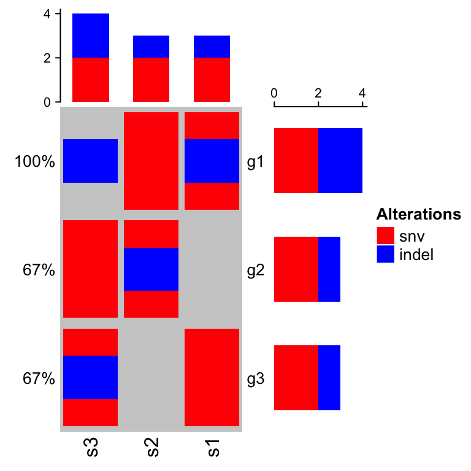
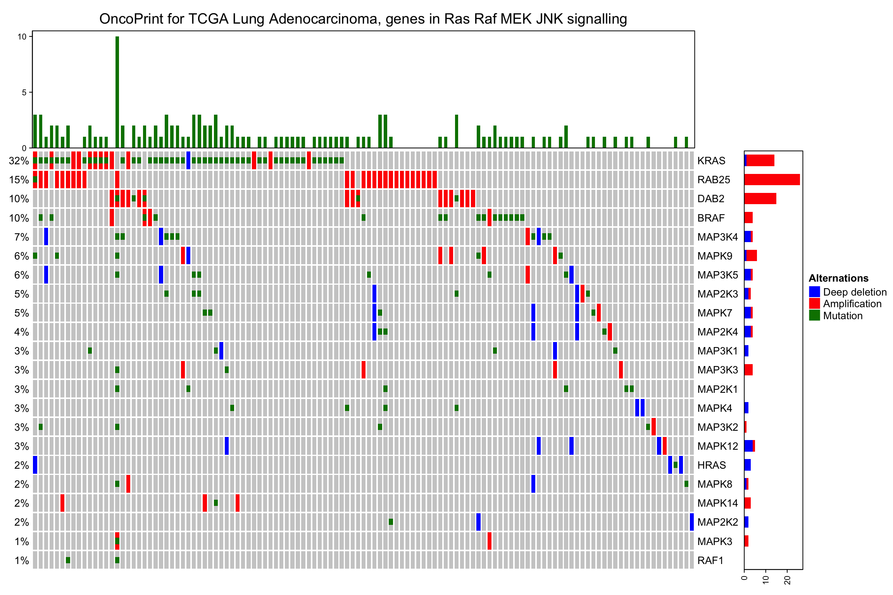

Chapter 7 OncoPrint
OncoPrint is a way to visualize multiple genomic alteration events by heatmap. Here the ComplexHeatmap package provides a oncoPrint() function. Besides the default style which is provided by cBioPortal, there are additional barplots at both sides of the heatmap which show numbers of different alterations for each sample and for each gene. Also with the functionality of ComplexHeatmap, you can control oncoPrint with more flexibilities.
7.1 General settings
There are two different forms of input data. The first is represented as a matrix in which element would include multiple alterations in a form of a complex string. In follow example, ‘g1’ in ‘s1’ has two types of alterations which are ‘snv’ and ‘indel’.
mat = read.table(textConnection(
",s1,s2,s3
g1,snv;indel,snv,indel
g2,,snv;indel,snv
g3,snv,,indel;snv"), row.names = 1, header = TRUE, sep = ",", stringsAsFactors = FALSE)
mat = as.matrix(mat)
mat## s1 s2 s3
## g1 "snv;indel" "snv" "indel"
## g2 "" "snv;indel" "snv"
## g3 "snv" "" "indel;snv"In this case, we need to define a function to extract different alteration types and pass the function to get_type argument. The function should return a vector of alteration types.
For one gene in one sample, since different alteration types may be drawn into one same grid in the heatmap, we need to define how to add the graphics by self-defined functions. Here if the graphics have no transparency, orders of how to add graphics matters. In following example, snv are first drawn and then the indel. You can see rectangles for indels are actually smaller than that for snvs so that you can visualiza both snvs and indels if they are in a same grid. Names in the list of functions should correspond to the alteration types (here, snv and indel).
For the self-defined graphic function, there should be four arguments which are positions of the grids on the heatmap (x and y), and widths and heights of the grids (w and h).
Colors for different alterations are defined in col. It should be a named vector for which names correspond to alteration types. It is used to generate the barplots and the legends.
library(ComplexHeatmap)
col = c(snv = "red", indel = "blue")
oncoPrint(mat, get_type = function(x) strsplit(x, ";")[[1]],
alter_fun = list(
snv = function(x, y, w, h) grid.rect(x, y, w*0.9, h*0.9, gp = gpar(fill = col["snv"], col = NA)),
indel = function(x, y, w, h) grid.rect(x, y, w*0.9, h*0.4, gp = gpar(fill = col["indel"], col = NA))
), col = col)## All mutation types: snv, indel
In above example, form of the string (e.g. snv;indel) correlates to how you define get_type. If the string has the form of snv|indel|amp, get_type should be defined as function(x) strsplit(x, "|")[[1]].
If you are pulzzed by how to generated the matrix, there is a second way. The second type of input data is a list of matrix for which each matrix contains binary value representing whether the alteration is absent or present. The list should have names which correspond to the alteration types.
mat_list = list(snv = matrix(c(1, 0, 1, 1, 1, 0, 0, 1, 1), nrow = 3),
indel = matrix(c(1, 0, 0, 0, 1, 0, 1, 0, 0), nrow = 3))
rownames(mat_list$snv) = rownames(mat_list$indel) = c("g1", "g2", "g3")
colnames(mat_list$snv) = colnames(mat_list$indel) = c("s1", "s2", "s3")
mat_list## $snv
## s1 s2 s3
## g1 1 1 0
## g2 0 1 1
## g3 1 0 1
##
## $indel
## s1 s2 s3
## g1 1 0 1
## g2 0 1 0
## g3 0 0 0oncoPrint() expects all matrix in mat_list having same row names and column names. Users can use unify_mat_list() to adjust the matrix list.
mat_list2 = mat_list
mat_list2$indel = mat_list2$indel[1:2, 1:2]
mat_list2## $snv
## s1 s2 s3
## g1 1 1 0
## g2 0 1 1
## g3 1 0 1
##
## $indel
## s1 s2
## g1 1 0
## g2 0 1mat_list2 = unify_mat_list(mat_list2)
mat_list2## $snv
## s1 s2 s3
## g1 1 1 0
## g2 0 1 1
## g3 1 0 1
##
## $indel
## s1 s2 s3
## g1 1 0 0
## g2 0 1 0
## g3 0 0 0Pass mat_list to oncoPrint():
oncoPrint(mat_list,
alter_fun = list(
snv = function(x, y, w, h) grid.rect(x, y, w*0.9, h*0.9, gp = gpar(fill = col["snv"], col = NA)),
indel = function(x, y, w, h) grid.rect(x, y, w*0.9, h*0.4, gp = gpar(fill = col["indel"], col = NA))
), col = col)## All mutation types: snv, indel
In above examples, alter_fun is a list of functons which add graphics layer by layer. Graphics can also be added in a grid-by-grid style by specifying alter_fun as a single function. The difference from the function list is now alter_fun should accept a fifth argument which is a logical vector. This logical vector shows whether different alterations exist for current gene in current sample.
Let’s assume in a grid there is only snv event, v for this grid is:
## snv indel
## TRUE FALSEoncoPrint(mat_list,
alter_fun = function(x, y, w, h, v) {
if(v["snv"]) grid.rect(x, y, w*0.9, h*0.9, gp = gpar(fill = col["snv"], col = NA))
if(v["indel"]) grid.rect(x, y, w*0.9, h*0.4, gp = gpar(fill = col["indel"], col = NA))
}, col = col)## All mutation types: snv, indel
If alter_fun is set as a single function, customization can be more flexible. In following example, rectangles always fill the whole grid evenly.
oncoPrint(mat_list,
alter_fun = function(x, y, w, h, v) {
n = sum(v)
h = h*0.9
# use `names(which(v))` to correctly map between `v` and `col`
if(n) grid.rect(x, y - h*0.5 + 1:n/n*h, w*0.9, 1/n*h,
gp = gpar(fill = col[names(which(v))], col = NA), just = "top")
}, col = col)## All mutation types: snv, indel
With a single function for alter_fun, you can define different graphics for different alterations. In following plot, you need to adjust the height of the whole plot to make sure the height for each cell is more than double of the width.
snv_fun = function(x, y, w, h) {
grid.rect(x, y, w, h, gp = gpar(fill = col["snv"], col = NA))
}
indel_fun = function(x, y, r) {
grid.circle(x, y, r, gp = gpar(fill = col["indel"], col = NA))
}
oncoPrint(mat, get_type = function(x) strsplit(x, ";")[[1]],
alter_fun = function(x, y, w, h, v) {
n = sum(v)
w = convertWidth(w, "cm")*0.9
h = convertHeight(h, "cm")*0.9
l = min(unit.c(w, h))
grid.rect(x, y, w, h, gp = gpar(fill = "grey", col = NA))
if(n == 0) return(NULL)
if(n == 1) {
if(names(which(v)) == "snv") snv_fun(x, y, l, l)
if(names(which(v)) == "indel") indel_fun(x, y, l*0.5)
} else if(n == 2) {
snv_fun(x, y-0.25*h, l, l)
indel_fun(x, y+0.25*h, l*0.5)
}
}, col = col)## All mutation types: snv, indel
If alter_fun is specified as a list, the order of the elements controls the order of adding graphics. There is a special element named background which defines how to draw background and it should be always put as the first element in the alter_fun list. In following example, backgrond color is changed to light green with borders.
oncoPrint(mat_list,
alter_fun = list(
background = function(x, y, w, h) grid.rect(x, y, w, h, gp = gpar(fill = "#00FF0020")),
snv = function(x, y, w, h) grid.rect(x, y, w*0.9, h*0.9, gp = gpar(fill = col["snv"], col = NA)),
indel = function(x, y, w, h) grid.rect(x, y, w*0.9, h*0.4, gp = gpar(fill = col["indel"], col = NA))
), col = col)## All mutation types: snv, indel
Or just remove the background:
oncoPrint(mat_list,
alter_fun = list(
background = NULL,
snv = function(x, y, w, h) grid.rect(x, y, w*0.9, h*0.9, gp = gpar(fill = col["snv"], col = NA)),
indel = function(x, y, w, h) grid.rect(x, y, w*0.9, h*0.4, gp = gpar(fill = col["indel"], col = NA))
), col = col)## All mutation types: snv, indel
You can customize the oncoprot by self-defining alter_fun. But be careful you must convert w and h to absolute units.
oncoPrint(mat, get_type = function(x) strsplit(x, ";")[[1]],
alter_fun = list(
snv = function(x, y, w, h) {
w = convertWidth(w, "cm")
h = convertHeight(h, "cm")
l = min(unit.c(w, h))
grid.rect(x, y, l*0.9, l*0.9, gp = gpar(fill = col["snv"], col = NA))
},
indel = function(x, y, w, h) {
w = convertWidth(w, "cm")
h = convertHeight(h, "cm")
r = min(unit.c(w, h))*0.5
grid.circle(x, y, r*0.9, gp = gpar(fill = col["indel"], col = NA))
}
), col = col)## All mutation types: snv, indel
7.2 Apply to cBioPortal dataset
Now we make an oncoPrint with a real-world data. The data is retrieved from cBioPortal. Steps for getting the data are as follows:
- go to http://www.cbioportal.org
- search Cancer Study: “Lung Adenocarcinoma Carcinoma” and select: “Lung Adenocarcinoma Carcinoma (TCGA, Provisinal)”
- In “Enter Gene Set” field, select: “General: Ras-Raf-MEK-Erk/JNK signaling (26 genes)”
- submit the form
In the results page,
- go to “Download” tab, download text in “Type of Genetic alterations across all cases”
The order of samples can also be downloaded from the results page,
- go to “OncoPrint” tab, move the mouse above the plot, click “download” icon and click “Sample order”
First we read the data and do some pre-processing.
mat = read.table(paste0(system.file("extdata", package = "ComplexHeatmap"),
"/tcga_lung_adenocarcinoma_provisional_ras_raf_mek_jnk_signalling.txt"),
header = TRUE,stringsAsFactors=FALSE, sep = "\t")
mat[is.na(mat)] = ""
rownames(mat) = mat[, 1]
mat = mat[, -1]
mat= mat[, -ncol(mat)]
mat = t(as.matrix(mat))
mat[1:3, 1:3]## TCGA-05-4384-01 TCGA-05-4390-01 TCGA-05-4425-01
## KRAS " " "MUT;" " "
## HRAS " " " " " "
## BRAF " " " " " "There are three different alterations in mat: HOMDEL, AMP and MUT. We first define how to add graphics which correspond to different alterations.
alter_fun = list(
background = function(x, y, w, h) {
grid.rect(x, y, w-unit(0.5, "mm"), h-unit(0.5, "mm"), gp = gpar(fill = "#CCCCCC", col = NA))
},
HOMDEL = function(x, y, w, h) {
grid.rect(x, y, w-unit(0.5, "mm"), h-unit(0.5, "mm"), gp = gpar(fill = "blue", col = NA))
},
AMP = function(x, y, w, h) {
grid.rect(x, y, w-unit(0.5, "mm"), h-unit(0.5, "mm"), gp = gpar(fill = "red", col = NA))
},
MUT = function(x, y, w, h) {
grid.rect(x, y, w-unit(0.5, "mm"), h*0.33, gp = gpar(fill = "#008000", col = NA))
}
)Also colors for different alterations which will be used for barplots.
col = c("MUT" = "#008000", "AMP" = "red", "HOMDEL" = "blue")Make the oncoPrint and adjust heatmap components such as the title and the legend.
oncoPrint(mat, get_type = function(x) strsplit(x, ";")[[1]],
alter_fun = alter_fun, col = col,
column_title = "OncoPrint for TCGA Lung Adenocarcinoma, genes in Ras Raf MEK JNK signalling",
heatmap_legend_param = list(title = "Alternations", at = c("AMP", "HOMDEL", "MUT"),
labels = c("Amplification", "Deep deletion", "Mutation")))## All mutation types: MUT, AMP, HOMDEL
As you see, the genes and samples are sorted automatically. Rows are sorted based on the frequency of the alterations in all samples and columns are sorted to visualize the mutual exclusivity across genes based on the “memo sort” method which is kindly provided by B. Arman Aksoy. If you want to turn off the default sorting, set row_order or column_order to NULL.
By default, if one sample has no alteration, it will still remain in the heatmap, but you can set remove_empty_columns to TRUE to remove it:
oncoPrint(mat, get_type = function(x) strsplit(x, ";")[[1]],
alter_fun = alter_fun, col = col,
remove_empty_columns = TRUE,
column_title = "OncoPrint for TCGA Lung Adenocarcinoma, genes in Ras Raf MEK JNK signalling",
heatmap_legend_param = list(title = "Alternations", at = c("AMP", "HOMDEL", "MUT"),
labels = c("Amplification", "Deep deletion", "Mutation")))## All mutation types: MUT, AMP, HOMDEL
As the normal Heatmap() function, row_order or column_order can be assigned with a vector of orders (either numeric or character). Following the order of samples are gathered from cBio as well. You can see the difference for the sample order between ‘memo sort’ and the method used by cBio.
Also notice how we move the legend to the bottom of the oncoPrint.
sample_order = scan(paste0(system.file("extdata", package = "ComplexHeatmap"),
"/sample_order.txt"), what = "character")
ht = oncoPrint(mat, get_type = function(x) strsplit(x, ";")[[1]],
alter_fun = alter_fun, col = col,
row_order = NULL, column_order = sample_order,
remove_empty_columns = TRUE,
column_title = "OncoPrint for TCGA Lung Adenocarcinoma, genes in Ras Raf MEK JNK signalling",
heatmap_legend_param = list(title = "Alternations", at = c("AMP", "HOMDEL", "MUT"),
labels = c("Amplification", "Deep deletion", "Mutation"),
nrow = 1, title_position = "leftcenter"))## All mutation types: MUT, AMP, HOMDELdraw(ht, heatmap_legend_side = "bottom")
oncoPrint() actually returns a HeatmapList object, so you can add more Heatmaps or row annotations to it to visualize more complicated information.
Following example splits the heatmap into two halves and add a new heatmap to the right.
ht_list = oncoPrint(mat, get_type = function(x) strsplit(x, ";")[[1]],
alter_fun = alter_fun, col = col,
remove_empty_columns = TRUE,
column_title = "OncoPrint for TCGA Lung Adenocarcinoma, genes in Ras Raf MEK JNK signalling",
heatmap_legend_param = list(title = "Alternations", at = c("AMP", "HOMDEL", "MUT"),
labels = c("Amplification", "Deep deletion", "Mutation")),
split = sample(letters[1:2], nrow(mat), replace = TRUE)) +
Heatmap(matrix(rnorm(nrow(mat)*10), ncol = 10), name = "expr", show_column_dend = FALSE, width = unit(4, "cm"))## All mutation types: MUT, AMP, HOMDELdraw(ht_list, row_sub_title_side = "left")
If you make the plot in an interactive device (e.g. X11 or Rstudio IDE), the generation of the plot may be very slow. In this case, we suggest users to directly save the plot to a separate file (e.g. using png() or pdf()) and then visualize the plot afterwards.
7.3 Session info
sessionInfo()## R version 3.4.4 (2018-03-15)
## Platform: x86_64-apple-darwin15.6.0 (64-bit)
## Running under: macOS High Sierra 10.13.2
##
## Matrix products: default
## BLAS: /Library/Frameworks/R.framework/Versions/3.4/Resources/lib/libRblas.0.dylib
## LAPACK: /Library/Frameworks/R.framework/Versions/3.4/Resources/lib/libRlapack.dylib
##
## locale:
## [1] en_GB.UTF-8/en_GB.UTF-8/en_GB.UTF-8/C/en_GB.UTF-8/en_GB.UTF-8
##
## attached base packages:
## [1] grid methods stats graphics grDevices utils datasets
## [8] base
##
## other attached packages:
## [1] dendsort_0.3.3 dendextend_1.8.0 circlize_0.4.5
## [4] ComplexHeatmap_1.99.0
##
## loaded via a namespace (and not attached):
## [1] shape_1.4.4 modeltools_0.2-22 GetoptLong_0.1.7
## [4] tidyselect_0.2.4 xfun_0.3 kernlab_0.9-27
## [7] purrr_0.2.5 lattice_0.20-35 colorspace_1.3-2
## [10] viridisLite_0.3.0 htmltools_0.3.6 stats4_3.4.4
## [13] yaml_2.2.0 rlang_0.2.2 pillar_1.3.0
## [16] glue_1.3.0 prabclus_2.2-6 RColorBrewer_1.1-2
## [19] fpc_2.1-11.1 bindrcpp_0.2.2 plyr_1.8.4
## [22] bindr_0.1.1 robustbase_0.93-2 stringr_1.3.1
## [25] munsell_0.5.0 gtable_0.2.0 mvtnorm_1.0-8
## [28] GlobalOptions_0.1.1 evaluate_0.11 knitr_1.20
## [31] flexmix_2.3-14 class_7.3-14 DEoptimR_1.0-8
## [34] trimcluster_0.1-2.1 Rcpp_0.12.18 scales_1.0.0
## [37] backports_1.1.2 diptest_0.75-7 gridExtra_2.3
## [40] rjson_0.2.20 ggplot2_3.0.0 digest_0.6.17
## [43] stringi_1.2.4 bookdown_0.7 dplyr_0.7.6
## [46] rprojroot_1.3-2 tools_3.4.4 magrittr_1.5
## [49] lazyeval_0.2.1 tibble_1.4.2 cluster_2.0.7-1
## [52] crayon_1.3.4 whisker_0.3-2 pkgconfig_2.0.2
## [55] MASS_7.3-50 viridis_0.5.1 assertthat_0.2.0
## [58] rmarkdown_1.10 R6_2.2.2 mclust_5.4.1
## [61] nnet_7.3-12 compiler_3.4.4